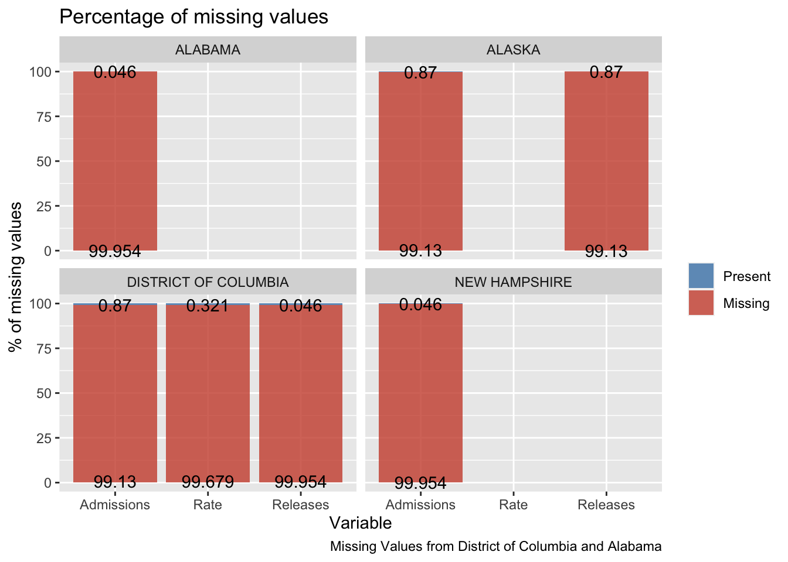

Chapter 4 Results
4.1 Analysis of crime and imprisonment
4.1.1 Crime
Crime rate is the number of crimes per 100,000 population. Below is the trend of crime rate from 1999 to 2019.
library(dplyr)
library(tidyr)
library(ggplot2)
crime_all_data %>%
filter(Area=='State Total') %>%
group_by(Year) %>%
summarize(Violent = sum(Violent)*100000/sum(Population), Property = sum(Property)*100000/sum(Population)) %>%
pivot_longer(cols = c('Violent', 'Property'), names_to = 'Nature') %>%
ggplot() +
geom_line(mapping=aes(x=Year, y=value, group=Nature, color=Nature)) +
theme(axis.text.x = element_text(angle = 60, size = 10, hjust = 1)) +
scale_y_continuous(name = "Crime Rate") +
scale_x_discrete(name = "Year")
Clearly, property crime has a higher incidence rate than violent crimes which is to be expected. We can also observe a general downward trend for both kinds of crime, however less pronounced for violent crimes. We now look at a statewise heatmap to identify which states have the highest crime incidence.
library(dplyr)
library(tidyr)
library(ggplot2)
crime_all_data %>%
mutate(Total_Crime_Rate = (Violent + Property)*100000/Population) %>%
ggplot() +
geom_tile(aes(x=Year, y=State, fill=Total_Crime_Rate)) +
facet_grid(cols=vars(Area)) +
theme(axis.text.x = element_text(angle = 60, size = 5, hjust = 1),
axis.text.y = element_text(angle = 0, size = 6),
strip.text.x = element_text(size = 6)) +
scale_y_discrete(name = "State") +
scale_x_discrete(name = "Year") +
scale_fill_gradientn(name = "", colours = rainbow(100)[75:1], trans = "log10")In terms of state totals, the worst crime rate in recent years is in District of Columbia, Alaska, Arkansas and New Mexico. The best crime rates in recent years are in West Virginia, Vermont, New Hampshire and Connecticut states. We will compare the imprisonment rates of these states with the crime rates over time later.
4.1.2 Imprisonment Analysis
Imprisonment rate is the number of prisoners per 100,000 population. Below is the trend of imprisonment rate.
total_imprisonment_data %>%
filter(State=='TOTAL') %>%
ggplot() +
geom_line(mapping=aes(x=Year, y=Rate, group=State)) +
theme(axis.text.x = element_text(angle = 60, size = 10, hjust = 1)) +
scale_y_continuous(name = "Number of prisoners per 100,000 population") +
scale_x_discrete(name = "Year")
Clearly the imprisonment rate has started dipping since 2008 (the year the administration changed from Republican to Democrat).
Below is the trend of imprisonment admissions and releases.
total_imprisonment_data %>%
filter(State=='TOTAL') %>%
pivot_longer(cols = c('Admissions', 'Releases'), names_to = 'Imprisonment') %>%
ggplot() +
geom_line(mapping=aes(x=Year, y=value, group=Imprisonment, color=Imprisonment)) +
theme(axis.text.x = element_text(angle = 60, size = 10, hjust = 1)) +
scale_y_continuous(name = "Number") +
scale_x_discrete(name = "Year")
Admissions and Releases generally track each other every year. However, admissions were more than releases till 2008 and it flipped order in 2008 (the year the administration changed from Republican to Democrat).
Rate represents the imprisonment rate of sentenced prisoners under the jurisdiction of state or federal authorities per 100,000 U.S. residents whereas admissions and releases is measured by the count of number of prisoners. Therefore, we convert to log base 10 in order to view the differently scaled variables on a common scale.
The following heatmap demonstrates the missing values in grey that were highlighted in section 3.3 where the District of Columbia stopped registering values after 2001 across Admissions, Releases, and Rate.
We also see a drastic increase in California Admissions and Releases where values were low from 1978-1985 (soft yellow) and then spiked in Admissions from 1985-2012 (bright red) which seems to be balanced off by the Releases from 1985-2012. Illinois has high Admissions numbers from the years 2002-2012 which seem to balance with the high releases from 2000-2012. Florida also has high admissions from 1987-1992 and 2000-2008 and high releases in the years 1987-1994 and 1998-2007. Overall it seems the Admissions and Releases heatmaps seems to have a direct correlations where one increases and so does the other.
This is not the case with Rate – it seems the imprisonment rate has gradually increased throughout the years across all states except Minnesota, Massachusetts and Maine where the rate has somewhat stabilized.
# Heatmap time series of Admissions, Rate, and Releases across all states
total_imprisonment_data %>%
filter(State != 'TOTAL') %>%
pivot_longer(cols = c(-1:-2)) %>%
ggplot() +
facet_wrap(~ name) +
geom_tile(aes(x=Year, y= State, fill=value)) +
theme(axis.text.x = element_text(angle = 60, size = 5, hjust = 1),
axis.text.y = element_text(angle = 0, size = 6)) +
scale_y_discrete(name = "") +
scale_x_discrete(name = "Year") +
scale_fill_gradientn(name = "", colours = rainbow(100)[75:1], trans = "log10")
In terms of state totals, the worst imprisonment in recent years is in California, Texas, Florida and Illinois. The best imprisonment in recent years are in New Hampshire, Massachusetts, Maine and Minnesota. We will compare the imprisonment rates of these states with the crime rates over time later.
4.2 Analysis of imprisonment with crime
shortlisted_states <- c('DISTRICT OF COLUMBIA', 'ALASKA', 'ARKANSAS', 'NEW MEXICO', 'WEST VIRGINIA', 'VERMONT', 'NEW HAMPSHIRE', 'CONNECTICUT', 'CALIFORNIA', 'TEXAS', 'FLORIDA', 'ILLINOIS', 'MASSACHUSETTS', 'MAINE', 'MINNESOTA')
min_max_crime_rate <- crime_all_data %>%
group_by(State) %>%
summarize(Max_Crime=max((Violent + Property)*100000/Population), Min_Crime=min((Violent + Property)*100000/Population))
shortlisted_imprisonment_data <- total_imprisonment_data %>%
filter(Year %in% 1999:2019) %>%
group_by(State) %>%
summarize(Max_Rate=max(Rate), Min_Rate=min(Rate))
shortlisted_imprisonment_data <- total_imprisonment_data %>%
filter(Year %in% 1999:2019) %>%
left_join(shortlisted_imprisonment_data, by='State') %>%
left_join(min_max_crime_rate, by='State') %>%
mutate(Rate=(Rate-Min_Rate)/(Max_Rate-Min_Rate)*(Max_Crime-Min_Crime))
crime_all_data %>%
filter(Area=='State Total', State %in% shortlisted_states) %>%
left_join(shortlisted_imprisonment_data, by = c('Year', 'State')) %>%
mutate("Total Crime Rate" = (Violent + Property)*100000/Population, "Imprisonment Rate" = Rate) %>%
pivot_longer(cols = c('Total Crime Rate', 'Imprisonment Rate'), names_to = 'Name') %>%
ggplot() +
facet_wrap(vars(State), scales='free') +
theme(axis.text.x = element_text(angle = 90, size = 4, hjust = 1),
axis.text.y = element_text(angle = 0, size = 6)) +
geom_line(mapping=aes(x=Year, y=value, group=Name, color=Name)) +
scale_y_continuous(name = "Number per 100,000 population") +
scale_x_discrete(name = "Year")As mentioned in the proposal, we will analyze and emphasize on the years that the following policies were placed into effect in the U.S. We will also consider the presidential party during these highlighted years. Major justice policy changes are listed in this article. This article has led to discovering the following major policy changes which will be a part of this project:
# table of key legislation updates
key_events <- data.frame( Policy = c("Comprehensive Crime Control Act", "Violent Crime Control and Law Enforcement Act", "Atkins v. Virginia", "Riley v. California", "New Clemency Initiative"),
Year = c("1984", "1984", "2002", "2014", "2014"),
Party = c("Republican" , "Republican", "Republican", "Democratic", "Democratic"))
knitr::kable(key_events)| Policy | Year | Party |
|---|---|---|
| Comprehensive Crime Control Act | 1984 | Republican |
| Violent Crime Control and Law Enforcement Act | 1984 | Republican |
| Atkins v. Virginia | 2002 | Republican |
| Riley v. California | 2014 | Democratic |
| New Clemency Initiative | 2014 | Democratic |
Since we don’t have crime data before 1999, we cannot determine if the policy changes in 1984 had an effect.